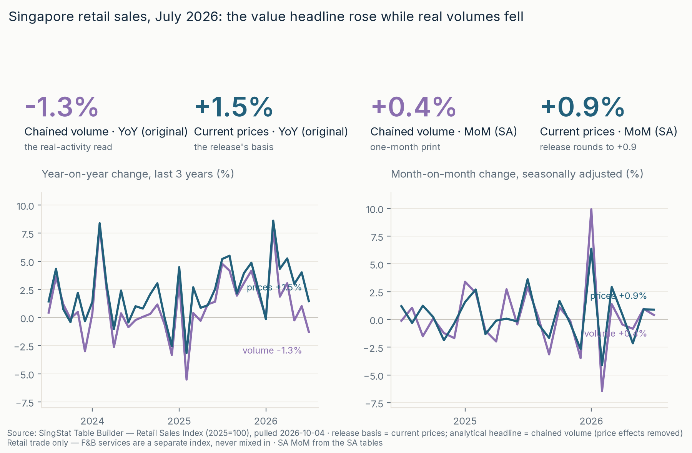
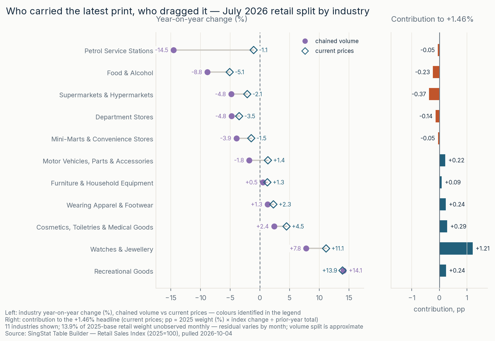

Retail Sales Index via SingStat Table Builder · latest month July 2026 · 4 of 6
July 2026 retail value growth was concentrated in watches, while volume weakness spanned six observed industries. Chained volume fell −1.3% YoY; current-price value rose +1.5%. Six of eleven industries declined in volume, representing 47.8% of total 2025-base weight; the subset covers 86.1%. Supermarkets and petrol supplied the largest approximate volume drags (−0.84 and −0.74 pp), partly offset by watches (+0.84 pp). On value, Watches & Jewellery contributed +1.21 pp against total growth of +1.46%. The +0.21 pp weight-swap result is for a renormalized 11-industry subset, not the rebase's effect on the published headline. Retail only; F&B services stay separate.


git clone https://github.com/faizsaifulnizam/retail-sales-split && cd retail-sales-split
uv venv .venv --python 3.12 # or: python -m venv .venv
source .venv/bin/activate # Windows: .venv\Scripts\activate
uv pip install -r requirements.txt # or: pip install -r requirements.txt
python src/download.py # 14 Table Builder tables → data/raw/ (gitignored; --force to re-pull)
python src/build_dataset.py # staging + 13 checks → data/processed/*.parquet
python src/audit.py # dated release, level/share checks → outputs/
python src/analysis.py # split + rebase + sensitivity + reconciliation history → outputs/
python src/figures.py # reports/figures/ + docs/img/ (light + dark)Then check outputs/latest_split.csv: Watches & Jewellery reads calculated value contribution +1.207 pp, Supermarkets & Hypermarkets −0.370 pp, and the Total row −1.28% (volume) / +1.46% (prices) for July 2026. July snapshot from the 2026-10-04 pull; these expectations apply to July, not an arbitrary latest row. A later re-pull can move the newest month.
Limits and residuals. July's +0.0174 pp residual is not a general identity: June's covered +3.3093 pp versus total growth +4.0182% leaves +0.7088 pp. Missing coverage, linked aggregation and rounding can enter the residual. Growth contributions are pp, not index-point changes; volume approximations have no universal ±0.1 pp error bound. The weight swap excludes 13.9% of new weight and does not reconstruct the old-base headline. These aggregates cannot measure customers, company sales or causes. The implied +2.77% value/volume deflator change is not CPI. F&B total is separately −3.26% volume / −1.86% value YoY.
Refresh and verification scope. A re-pull updates calculations, not the July release transcription or narrative. Transcribe the matching release-YYYY-MM-tables.csv, update audit selection and expected levels/share, review prose and snapshot locks, and run build_dataset → audit → analysis → figures. Stable LF CSVs require unchanged inputs; PNG bytes are only comparable within the same rendering environment. New execution/publication receipts are tracked in review-remediation.md; no fresh network/PDF check is claimed.